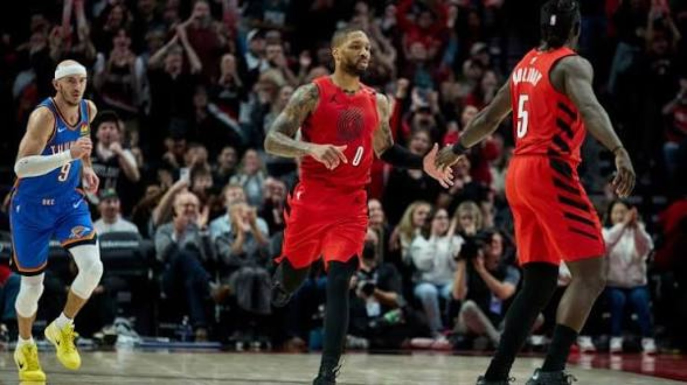
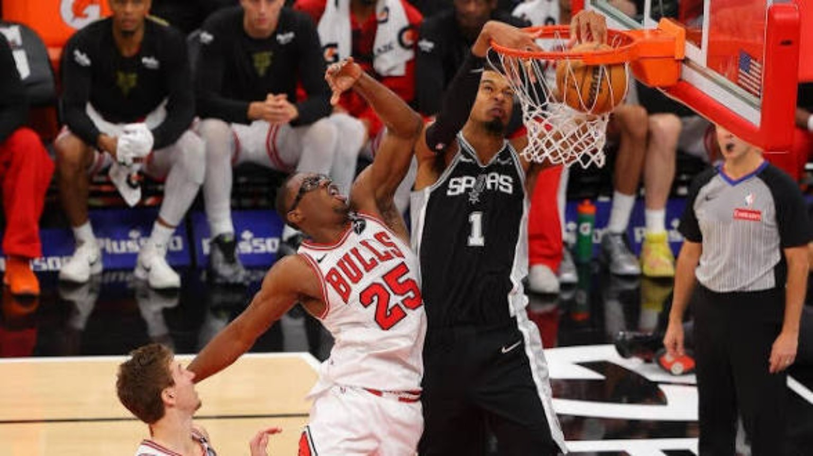
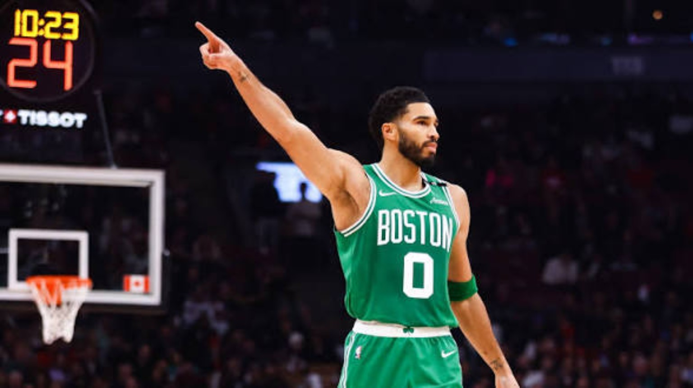
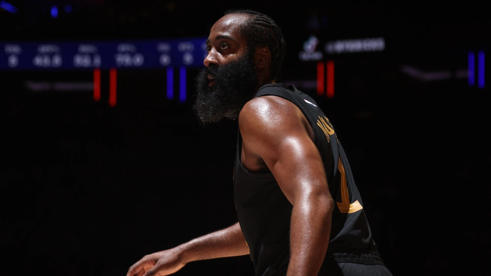
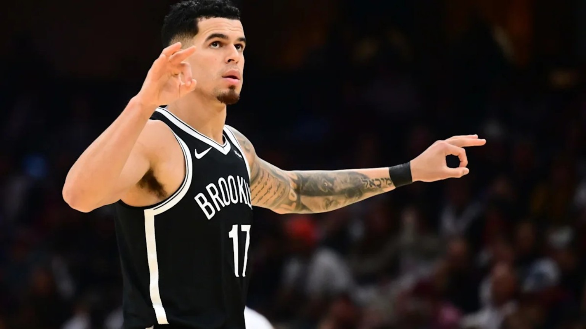
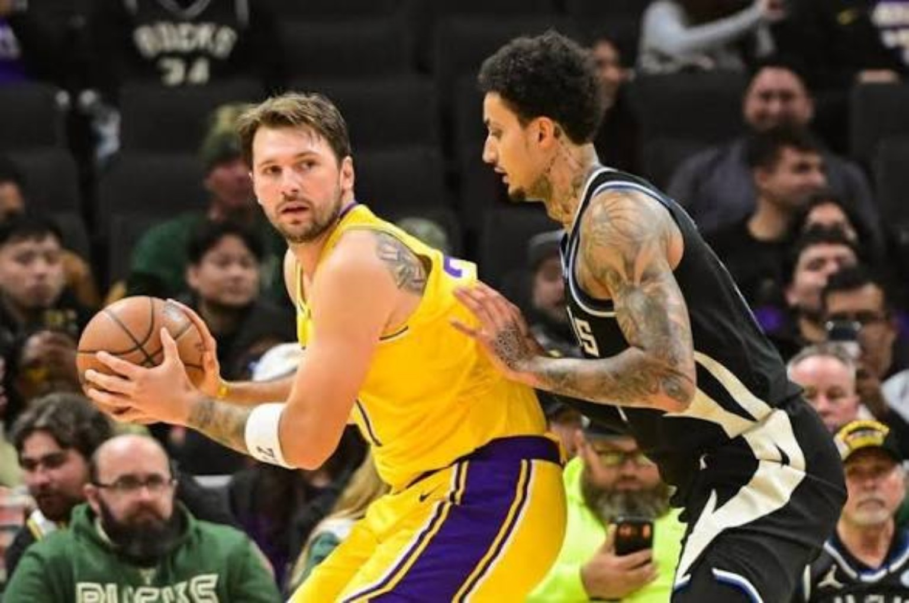
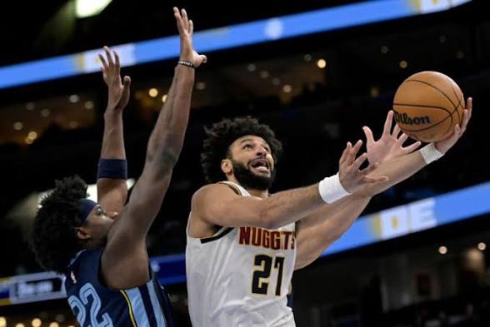
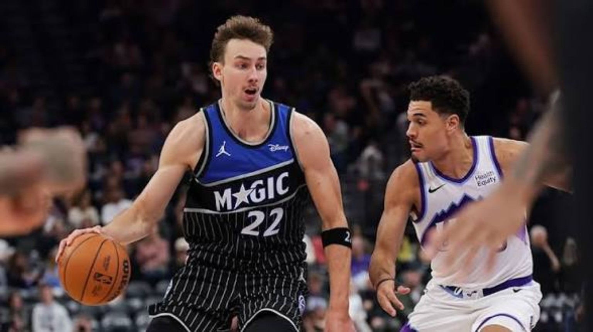
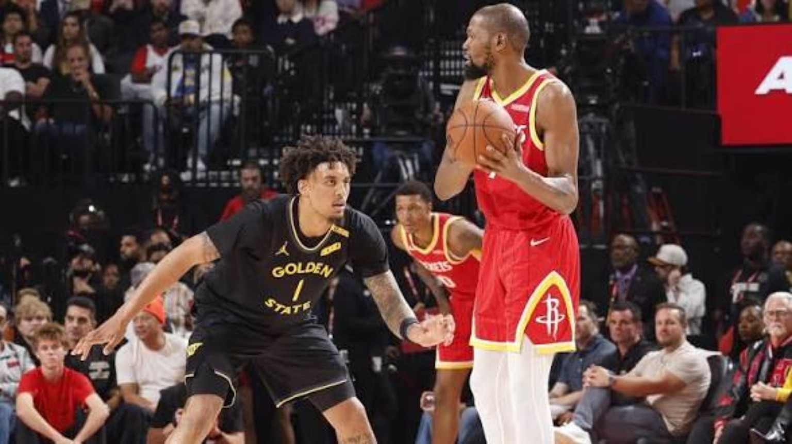
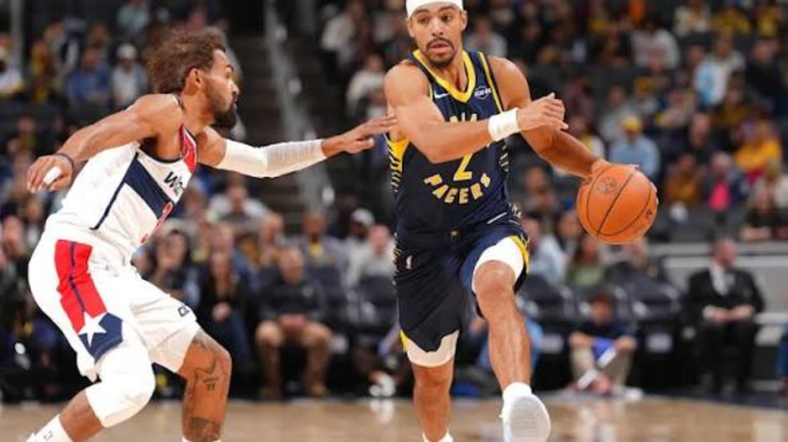

Portland beats Oklahoma City again. San Antonio storms back. Houston shuts down Golden State. Boston and the Lakers keep rolling.
Ten games. Ten final scores. Every matchup gets the full 4DK breakdown.
4DK Player of the Night: Victor Wembanyama
32 points, nine rebounds, five blocks and a dominant second-half comeback against Chicago. Wembanyama gets the nod over Franz Wagner’s 38-point eruption and Luka Dončić’s 32 because his two-way impact helped overturn a 14-point halftime deficit.
GAME 01 / 4DK FILM ROOM
PORTLAND MAKES IT TWO STRAIGHT AGAINST OKC
Portland Trail Blazers 118 — Oklahoma City Thunder 108

Portland–Oklahoma City: Portland players celebrate. | November 11, 2026 Nightcap
Portland did more than steal another game from the defending Western power. After beating Oklahoma City 123–103 the night before, the Blazers backed it up with another double-digit victory. This time the margin came from the perimeter: Portland hit 19 threes while Oklahoma City shot just 30.6 percent from deep. The Thunder actually won the paint battle 42–36 and outrebounded Portland 43–39, which makes the difference in shot quality from outside even more decisive.
Turning point: The pivotal stretch was the fourth quarter. Oklahoma City had climbed back within three after winning the third period 35–32, but Portland closed the night 30–23. Avdija supplied the offensive authority to keep the Thunder from reclaiming control. Shai scored 31, but his 0-for-7 night beyond the arc illustrates how Portland could withstand his drives without giving up enough efficient perimeter production.
What it means: At 8–3, Portland has earned a place in the serious Western Conference conversation. Two consecutive wins over the same contender offer stronger evidence than one hot shooting night, though the next test is sustaining that execution against different opponents. OKC at 8–4 needs to respond rather than overreact.
4DK DEEP DIVE — THE MATCHUP INSIDE THE MATCHUP
The striking detail is that Oklahoma City could win the glass and still lose the scoreboard decisively. Portland’s three-point volume changed the value of each possession: a paint basket or second chance for the Thunder was not enough whenever the Blazers answered with an open perimeter look. The Thunder need to distinguish between shots they are willing to concede and the rhythm threes that allow an opponent to build confidence.
GAME 02 / 4DK FILM ROOM
WEMBANYAMA AND HARPER ERASE CHICAGO’S LEAD
San Antonio Spurs 124 — Chicago Bulls 119

San Antonio–Chicago: a Spurs finish at the rim. | November 11, 2026 Nightcap
Chicago had the kind of offensive first half that should put a heavy favorite in danger: 70 points and a 14-point lead. But San Antonio did not chase the game recklessly. Its offense kept moving, and its defense began turning Chicago’s possessions into mistakes. The Spurs finished with just six turnovers against 19 by the Bulls, an enormous possession advantage that neutralized Chicago’s 57.9 percent shooting.
Turning point: The third quarter flipped the game. San Antonio outscored Chicago 34–19, transforming a 14-point halftime deficit into a one-point advantage. Wembanyama went 13-for-18 from the floor and blocked five shots; Harper’s 10 assists without a turnover gave the Spurs the control they needed. De’Aaron Fox contributed 17 points and nine assists.
What it means: San Antonio is 10–2, and this was a different kind of contender test: winning when an opponent shoots exceptionally well. Chicago falls to 1–9 and must address ball security before its offensive efficiency can translate into wins.
4DK DEEP DIVE — THE COMEBACK UNDER THE MICROSCOPE
A 68–49 second half is a major correction, not merely a star getting hot. The Spurs had to improve both ends after allowing 70 before intermission. Harper’s playmaking gave San Antonio a second organizer beside Wembanyama, while Wembanyama’s rim protection narrowed Chicago’s margin for error. The next test is starting games with that same defensive urgency instead of relying on a rescue act.
GAME 03 / 4DK FILM ROOM
BOSTON FINDS ANOTHER WAY TO WIN
Boston Celtics 98 — Toronto Raptors 93

Boston–Toronto: Boston signals on the court. | November 11, 2026 Nightcap
The Celtics did not win with a scoring avalanche. They won a hard, low-scoring road game despite shooting 41.1 percent and committing 18 turnovers. That matters for a 10–2 team: Boston’s record is being supported by defensive adaptability, not only offensive rhythm. Tatum’s 24 points came on 6-for-21 shooting, yet his eight assists and repeated trips to the foul line helped Boston maintain structure.
Turning point: Toronto led 61–54 at halftime, but Boston restricted the Raptors to 19 points in the third and just 13 in the fourth. White’s four blocks were especially striking for a guard, while Neemias Queta collected 13 rebounds and three blocks. Toronto’s Immanuel Quickley shot 3-for-14, and the Raptors finished at 37.6 percent overall.
What it means: Boston’s 10–2 start deserves a serious reassessment of its ceiling. This is the type of road victory that can matter in a playoff race when shots stop falling. Toronto slips to 5–6, with half-court execution late in games an immediate concern.
4DK DEEP DIVE — WHY THIS WIN TRAVELS
Boston’s offense was not pristine, and that is precisely why the result matters. Winning while shooting poorly and turning the ball over requires repeated defensive possessions without shortcuts. White’s four blocks from a guard spot speak to the disruption Boston generated. The question for opponents is no longer just how to survive the Celtics’ scoring; it is how to manufacture reliable offense when the game slows down.
GAME 04 / 4DK FILM ROOM
HARDEN PUNISHES NEW YORK
Cleveland Cavaliers 115 — New York Knicks 107

Cleveland–New York: Cleveland player spotlight. | November 11, 2026 Nightcap
Cleveland did not need to dominate every possession to win at Madison Square Garden. The Cavaliers shot 47.1 percent, made 15 threes and committed only 10 turnovers. James Harden’s 32 points on 9-for-14 shooting, including 5-for-7 from deep, gave Cleveland the high-efficiency shot creation that can decide a close matchup between East rivals.
Turning point: Cleveland established an early 33–23 first-quarter advantage and maintained enough separation through the middle periods before finishing with 33 in the fourth. Mitchell’s 23 points and six assists prevented New York from overloading Harden, while Jarrett Allen secured 14 rebounds. Brunson scored 27 and Karl-Anthony Towns supplied 21 points, 11 rebounds and eight assists, but the Knicks could not overcome the Cavaliers’ perimeter production.
What it means: Both teams remain in the crowded early East picture. Cleveland improves to 6–6, and this win shows the value of multiple reliable initiators. New York at 6–5 has enough talent to respond, but its defensive answers against elite guards need work.
4DK DEEP DIVE — THE POSSESSION ECONOMY
Harden’s efficient scoring was only one layer of Cleveland’s advantage. Fifteen made threes and just ten turnovers meant the Cavaliers protected their opportunities while making New York defend the whole floor. Brunson’s 27 kept the Knicks competitive, but Cleveland extracted more value from its possessions. For New York, this is a reminder that a strong individual scoring night cannot replace clean team execution.
GAME 05 / 4DK FILM ROOM
BROOKLYN HANGS 145 ON NEW ORLEANS
Brooklyn Nets 145 — New Orleans Pelicans 111

Brooklyn–New Orleans: Brooklyn celebrates a three-pointer. | November 11, 2026 Nightcap
BOX SCORE SPOTLIGHT Michael Porter Jr.: 22 PTS, 6 REB; Egor Demin: 22 PTS; Zion Williamson: 29 PTS
This was an offensive dismantling, not a narrow game distorted by late free throws. Brooklyn scored 39 in the first quarter and 44 in the second, building an 83–66 halftime lead before winning the third 24–15. The Nets shot 57 percent overall and 48.8 percent from three, while moving the ball for 30 assists. That combination made their attack exceptionally difficult to contain.
Turning point: The opening half established the tone, and the third quarter removed the remaining suspense. Porter and Demin each scored 22, Day’Ron Sharpe added 15 with four blocks, and Brooklyn won the glass 42–28. Zion scored 29 for New Orleans, but one player’s production cannot offset a team allowing 145 and losing the rebounding and passing battles so decisively.
What it means: The result is a useful reminder that Brooklyn’s offense can be dangerous when its spacing clicks. For New Orleans, this should trigger a detailed defensive film session, particularly around perimeter rotations, transition containment and finishing possessions with rebounds.
4DK DEEP DIVE — A DEFENSIVE ALARM IN NEW ORLEANS
Eighty-three points allowed in one half is a crisis of containment, transition organization, and resistance—even before assigning blame to a particular coverage. Brooklyn had multiple scoring outlets, so loading up on one creator was never going to be sufficient. Zion’s production kept one side of the individual matchup respectable, but New Orleans must address how easily opponents can get into comfortable offensive rhythm.
GAME 06 / 4DK FILM ROOM
LUKA KEEPS THE LAKERS ROLLING
Los Angeles Lakers 123 — Milwaukee Bucks 112

Lakers–Milwaukee: Los Angeles works against Milwaukee’s defense. | November 11, 2026 Nightcap
The Lakers’ 11–2 record is being built on more than Luka’s star power. Dončić scored 32 and hit five threes, but Los Angeles also received 23 bench points from Sandro Mamukelashvili on 9-for-15 shooting. Austin Reaves chipped in 18, while Walker Kessler posted 10 points and 11 rebounds. That supporting production gave the Lakers options when Milwaukee tried to pressure the primary creators.
Turning point: Los Angeles gradually stretched its advantage through the first three quarters, winning those periods by 2, 9 and 10 points. The Lakers led 94–73 entering the fourth. Milwaukee’s 39-point final period made the final margin more respectable, but it did not change who controlled the contest. The Lakers also won rebounds 48–40 and assists 32–25.
What it means: The Lakers are 11–2 and deserve to be discussed among the West’s strongest early teams. Milwaukee is 1–11 despite 27 points from Herro and 25 from Jaime Jaquez Jr.; its larger problem is converting individual offense into sustained two-way competitiveness.
4DK DEEP DIVE — MORE THAN THE LUKA SHOW
The encouraging Lakers detail is the production beyond the headliner. Luka can bend a defense with his passing threat and pull-up shooting, but 23 bench points from Mamukelashvili illustrate the value of having another reliable finishing option. The next level for Los Angeles is sustaining that balance against stronger defenses, especially when opponents sell out to make Dončić surrender the ball.
GAME 07 / 4DK FILM ROOM
MURRAY AND JOKIĆ OUTLAST MEMPHIS
Denver Nuggets 123 — Memphis Grizzlies 118

Denver–Memphis: Denver attacks the basket. | November 11, 2026 Nightcap
Denver’s offensive hierarchy worked exactly as designed. Jamal Murray scored 30 on 12-for-19 shooting, Nikola Jokić came close to another triple-double, and Cameron Johnson contributed 23 while hitting four threes. The Nuggets finished with 34 assists and only six turnovers, evidence of a team creating quality shots without sacrificing ball security.
Turning point: Denver built a 65–52 halftime lead, but Memphis responded with a 38–29 third quarter to make the closing period meaningful. The Nuggets steadied themselves with a 29–28 fourth. Denver’s 54 points in the paint against Memphis’ 40 were particularly important in a game where the Grizzlies shot a better percentage from three.
What it means: Denver improves to 6–4 and gets a meaningful road win over a Memphis team now 7–4. Murray’s efficiency alongside Jokić is the formula that raises Denver’s postseason ceiling; Memphis can take encouragement from its comeback while examining how it conceded the early interior advantage.
4DK DEEP DIVE — TWO-MAN GAME, MULTIPLE ANSWERS
Murray’s shotmaking and Jokić’s nearly complete statistical line create a difficult defensive choice: pressure the point of attack and risk the passing lanes, or stay home and permit comfortable creation. Johnson’s perimeter contribution made the dilemma sharper. Memphis remained within striking distance, which means Denver still has to evaluate its ability to string together stops late rather than assuming offensive execution alone will settle every close game.
GAME 08 / 4DK FILM ROOM
FRANZ TAKES OVER IN UTAH
Orlando Magic 123 — Utah Jazz 108

Orlando–Utah: Orlando handles the ball against Utah. | November 11, 2026 Nightcap
Orlando’s win had three complementary engines. Franz Wagner supplied 38 points on 13-for-23 shooting, Desmond Bane stretched the floor with seven three-pointers, and Anthony Black created from the backcourt with 22 points and eight assists. That is a much harder offensive profile to defend than a one-star isolation attack.
Turning point: Utah actually led 87–85 after three quarters, but Orlando overwhelmed the Jazz 38–21 in the fourth. The Magic also won the rebounding battle 45–38 and the paint 40–28. Darryn Peterson scored 22 for Utah, but the Jazz could not sustain the stops necessary to protect their late lead.
What it means: Orlando gets a road win that highlights its scoring versatility and late-game execution. Utah falls to 1–11, and its fourth-quarter defensive collapse is more concerning than the final margin alone.
4DK DEEP DIVE — WHY THE SUPPORTING CAST MATTERED
Wagner’s 38 will own the headline, but Bane’s seven threes and Black’s eight assists explain why Orlando could sustain pressure from different parts of the floor. A defense that crowds Wagner must still account for a high-volume shooter and another ball-handler. The Magic should treat this as a blueprint for diversified offense, not an expectation that Wagner must score nearly 40 every night.
GAME 09 / 4DK FILM ROOM
HOUSTON STOPS GOLDEN STATE’S RUN
Houston Rockets 115 — Golden State Warriors 108

Houston–Golden State: Houston surveys Golden State’s defense. | November 11, 2026 Nightcap
Houston controlled the game’s interior efficiency. The Rockets shot 50.6 percent overall and outscored Golden State 50–34 in the paint. Golden State won the rebounding battle 48–40, but that advantage could not compensate for shooting only 40.9 percent. The Rockets opened with a 35–20 first quarter and retained enough offensive control to finish the job.
Turning point: Golden State made its push by winning the second quarter 31–21, but Houston responded to each surge, including a 30–29 fourth. Yaxel Lendeborg’s 25-point, 10-rebound performance was an encouraging individual statement, and Podziemski added 22. Stephen Curry played only six minutes according to the box score, a crucial limitation to acknowledge without guessing at the reason.
What it means: Houston improves to 9–3 and adds a useful win against a Pacific Division opponent. Golden State has encouraging young-player production, but its offensive ceiling is different when Curry’s minutes are limited. This game reinforces Houston’s ability to win with size and efficient interior offense.
4DK DEEP DIVE — THE INTERIOR BATTLE
Houston’s edge in points in the paint shows that the Rockets found more valuable finishes near the basket even while Golden State collected more rebounds. That contrast is important: possession volume does not guarantee offensive efficiency. Golden State needs to examine how its half-court possessions ended, while Houston can take confidence from scoring inside without depending solely on outside shooting variance.
GAME 10 / 4DK FILM ROOM
INDIANA CLOSES STRONG AGAINST WASHINGTON
Indiana Pacers 114 — Washington Wizards 101

Indiana–Washington: Indiana drives against Washington. | November 11, 2026 Nightcap
Indiana’s win came from its willingness to share the ball and attack inside. The Pacers totaled 29 assists to Washington’s 12 and scored 60 paint points to the Wizards’ 44. Pascal Siakam supplied 28 points and made all 12 of his free throws, while Ivica Zubac finished with 20 and 12 rebounds. Andrew Nembhard’s 17 points and 10 assists provided another source of controlled creation.
Turning point: The teams were tied at 77 after three quarters, but Indiana dominated the fourth 37–24. That decisive period turned a competitive night into a comfortable final score. Washington received 25 from Kyshawn George and 21 points with 13 rebounds from Anthony Davis, yet its 15 turnovers and limited ball movement made it difficult to match Indiana’s late execution.
What it means: Indiana improves to 4–8 and can build on a fourth quarter that showed its offensive identity. Washington also stands at 4–8, with a clear need to improve its possession-to-possession passing and late-game organization.
4DK DEEP DIVE — THE PASSING GAP
The 29–12 assist disparity is the clearest measure of how differently these offenses operated. Indiana repeatedly turned possessions into connected actions, while Washington too often needed individual shot creation. Siakam’s free-throw accuracy provided a stable scoring floor, and Zubac’s work inside gave the Pacers another way to finish. The Wizards need to create advantages earlier in the clock rather than asking difficult shots to rescue stalled possessions.
4 Da Kulture • NBA Nightcap • November 11, 2026. Earlier dated Nightcaps remain in the archive.